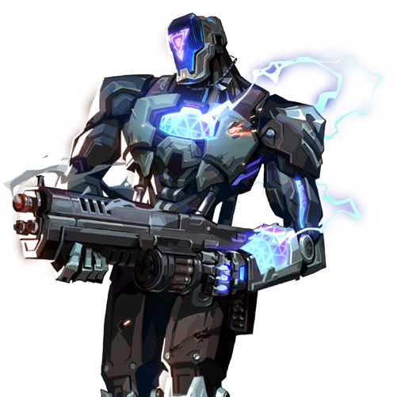

KAY/O

国籍: 不明
ロール: イニシエーター
KAY/Oは敵のアビリティを無効化する能力に優れたロボットです。彼のアビリティは、敵の戦術を崩し、チームの攻撃をサポートするのに役立ちます。
公式トレーラー
スキル
| スキル名 | 値段 | 所持上限 | 説明 |
|---|---|---|---|
| フラッシュドライブ (Q) | 250 | 2個 | スキル使用でKAY/Oの前方にフラッシュバングを投げる。短い遅延の後に爆発し、範囲内の敵をブラインドさせる。 |
| フラグメント (E) | 200 | 1個 | 地面に着弾すると爆発するグレネードを投げる。複数回爆発し、範囲内の敵に大きなダメージを与える。 |
| ゼロポイント (C) | 無料 | 1個 | スキル使用でKAY/Oの前方にナイフを投げる。着弾すると範囲内の敵のアビリティを無効化する。 |
| ヌルコマンド (X) - アルティメット | - | 1個 | 一時的にKAY/Oの戦闘能力を向上させ、範囲内の敵のアビリティを無効化するフィールドを展開する。ダウンしても味方による復活が可能。 |
立ち回りとおすすめマップ
攻めの立ち回り
KAY/Oはゼロポイントで敵のアビリティを無効化し、サイトに突入するエントリー役です。フラグメントで敵を排除し、フラッシュドライブで敵の視界を奪いながら進行します。
守りの立ち回り
KAY/Oは守りにおいても、ゼロポイントで敵のアビリティを無効化し、フラグメントで敵を足止めします。フラッシュドライブでのピークも有効です。
アルティメットの使い方
ヌルコマンドは範囲内の敵のアビリティを無効化するため、敵の戦術を崩すのに非常に有効です。味方と連携し、敵のアビリティを無効化して攻撃を仕掛けます。